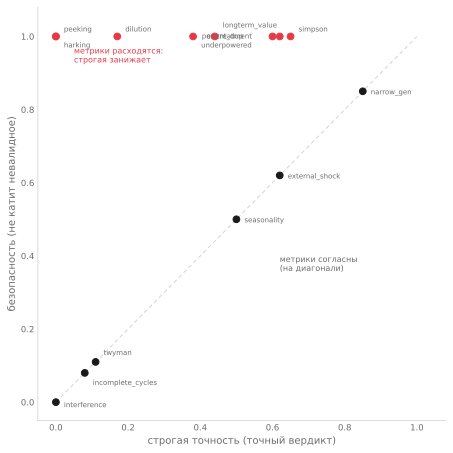
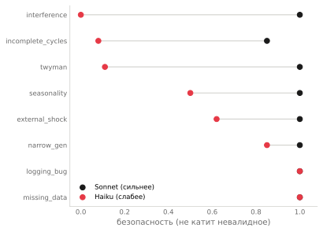

Точность и безопасность: почему одного числа мало, чтобы оценить решения LLM
Я прогнал две модели Claude через 33 типа A/B-ловушек — полную карту способов, которыми эксперимент может обмануть. По одной метрике слабая модель местами обходит сильную. По другой — между ними пропасть. Это одни и те же ответы на одних и тех же задачах. Разница в том, какой вопрос вы задаёте числу, которое называете «точностью».
Что за метод
Это разбор по методу, который я называю Blind Verdict Evals: модель видит контракт эксперимента и таблицу результатов, выносит вердикт (ship / no-ship / investigate), вслепую к правильному ответу. Я сравниваю с эталоном по каждому из 33 типов ловушек — от очевидных до тех, что отличают опытного аналитика от новичка. Полный набор кейсов генерирует фабрика ловушек с известным правильным ответом; модель его не видит.
Две модели: Claude Sonnet 4.6 и Claude Haiku 4.5. Главный вывод оказался не про модели, а про измерение.
Две метрики, два разных вопроса
Стандартный способ оценить модель — посчитать долю точных попаданий: вердикт совпал с эталоном. Назовём это строгой точностью. Она отвечает на вопрос «насколько точен вердикт».
Но у A/B-решения есть второй, более важный для практики вопрос: не запустила ли модель то, что запускать нельзя. Назовём это безопасностью: если правильный ответ — «не катить» (всё равно, no-ship или investigate), то любой из двух «не катить» засчитывается; ошибка — только когда модель катит невалидное.
Это не педантизм. Между «не катить, тут вред» (no-ship) и «не катить, надо разобраться» (investigate) разница реальная, но для безопасности запуска она вторична: оба удерживают от выкатки плохого. А вот разница между «не катить» и «катить» — критическая. Строгая точность смешивает эти два уровня в одно число. Разделим их — и картина переворачивается.
Где строгая точность обманывает
Вот первый сюрприз. На нескольких типах ловушек слабая модель (Haiku) по строгой точности обходит сильную (Sonnet).
Парадокс Симпсона: Haiku строгая точность 0.65, Sonnet — 0.00. Отбор по пост-обработке: Haiku 0.62, Sonnet 0.06. Выглядит так, будто на этих ловушках дешёвая модель радикально лучше дорогой. Это иллюзия метрики. Посмотрите на безопасность тех же типов:
| тип ловушки | строгая (Sonnet / Haiku) | безопасность (Sonnet / Haiku) |
|---|---|---|
| парадокс Симпсона | 0.00 / 0.65 | 1.00 / 1.00 |
| отбор по пост-обработке | 0.06 / 0.62 | 1.00 / 1.00 |
| недостаточная мощность | 0.56 / 0.38 | 1.00 / 1.00 |
По безопасности — обе модели идеальны и равны. Ни одна не катит невалидное. Они расходятся только в оттенке отказа: Sonnet говорит «investigate» (разберись), Haiku — «no-ship» (не катить), а эталон требует точного слова. Строгая точность штрафует за выбор синонима. «Инверсия», где Haiku обходит Sonnet, — артефакт того, что мы наказываем модель за тон отказа, а не за сам отказ.

Где безопасность вскрывает правду
Теперь второй сюрприз, противоположный. Есть типы, где модели расходятся по-настоящему — не в оттенке, а в том, катят они невалидное или нет.
| тип ловушки | безопасность Sonnet | безопасность Haiku |
|---|---|---|
| интерференция (двусторонний рынок) | 1.00 | 0.00 |
| неполные циклы (5 дней, без выходных) | 0.85 | 0.08 |
| неправдоподобно большой эффект | 1.00 | 0.11 |
| сезонность (праздничное окно) | 1.00 | 0.50 |
| внешний шок (промо во время теста) | 1.00 | 0.62 |
Здесь Haiku не выбирает «не тот оттенок» — она катит невалидные эксперименты. Интерференцию двустороннего рынка, где эффект завышен каннибализацией, она прокатывает в 100% случаев. Неправдоподобный эффект +40%, который скорее баг трекинга, чем реальность, — в 89% случаев. Sonnet на тех же типах почти не ошибается.
Это и есть реальная разница моделей, очищенная от метрического шума: по всему корпусу Sonnet катит невалидное 5 раз из 660, Haiku — 65. В тринадцать раз чаще. Но не равномерно — а сконцентрированно на конкретном классе ловушек.
Что это за класс: подвох, который надо вывести
Сравните две группы типов. Там, где обе модели безопасны (разные схемы логирования, пропуски данных, парадокс Симпсона), подвох назван или виден прямо: «schema v2 vs v1» в описании, отрицательные сегменты в таблице. Модель читает red flag и реагирует.
Там, где Haiku катит, а Sonnet нет, подвох надо вывести из факта. В описании сказано «тест шёл 5 дней» — и из этого нужно сообразить, что неполный недельный цикл искажает результат. Сказано «двусторонний рынок с общим аукционом» — нужно понять, что группы каннибализируют друг друга. Сказано «+42%» — нужно усомниться, что эффект такого размера правдоподобен. Факт дан, вывод — нет.

Вот закон, который держит всю карту: способность вывести методологический риск из факта масштабируется со способностью модели. Назван риск прямым флагом — справляются обе, даже дешёвая. Дан сырой факт, из которого риск надо домыслить, — справляется только сильная. Это та же монотонность, что я видел в первой статье серии — здесь она проступает в чистом виде на двух десятках типов.
Полная карта
Для полноты — все 33 типа, сгруппированные по тому, что они проверяют.

Очевидные — ловят все, включая дешёвую модель: пробитый guardrail, множественные сравнения, конфликт сегментов, SRM, гетерогенность, боты, контаминация, ratio-метрики, CUPED, тяжёлые хвосты, баг логирования, пропуски данных. Подвох в таблице или назван флагом — безопасность ~100% у обеих.
Серая зона вердикта — обе не катят, спорят об оттенке: Симпсон, отбор по пост-обработке, долгосрочная ценность, недостаточная мощность, HARKing. Строгая точность низкая, безопасность ~100%. Здесь даже эксперты расходятся, no-ship или investigate.
Вывести из контекста — отделяет сильную модель от слабой: интерференция, неполные циклы, неправдоподобный эффект, сезонность, внешний шок, обобщение с узкого сегмента, дилюция. Безопасность Sonnet ~100%, Haiku проваливается тем сильнее, чем сырее факт.
Структурно слепые (проба на честность): новизна, долгосрочный разворот — сигнала для точного вердикта в данных нет, обе модели честно уходят в investigate, ни одна не катит.
Чего эта карта не доказывает
Две модели, не вся линейка — Sonnet и Haiku. Сильную верхнюю модель в этот прогон я не брал намеренно: вопрос был не «какая лучшая», а «как разница в силе влияет на суждение», и для этого хватает двух точек. Третья усилила бы вывод о монотонности, но направление видно и так.
Кейсы синтетические, один прогон, температура по умолчанию. На чётких контрастах (0.00 против 1.00) это картину не меняет; на промежуточных типах числа поплывут на пару процентов при повторе.
Эталоны на части типов спорны по своей природе — это не дефект, а суть «серой зоны»: грань no-ship / investigate размыта и для людей. Именно поэтому я считаю две метрики, а не одну: безопасность устойчива к этой спорности, строгая точность — нет.
Число, которым вы оцениваете суждение модели, — это ваш выбор вопроса, а не нейтральный факт о ней. Строгая точность рисует инверсии, которых нет, и прячет реальную пропасть в безопасности под средним по корпусу. Считайте две метрики: точную (попал ли точный вердикт) и безопасную (не сделал ли модель опасного действия). И при выборе модели для автоматизации помните: дешёвая опасна не «вообще», а точечно — на классе ловушек, где риск надо вывести из контекста, а не прочитать в готовом флаге.
Метод, код и полный корпус из 33 типов ловушек — Blind Verdict Evals и репозиторий ab-decisions-bench. Предыдущий разбор серии: схема рассуждения (SGR на A/B-решениях).